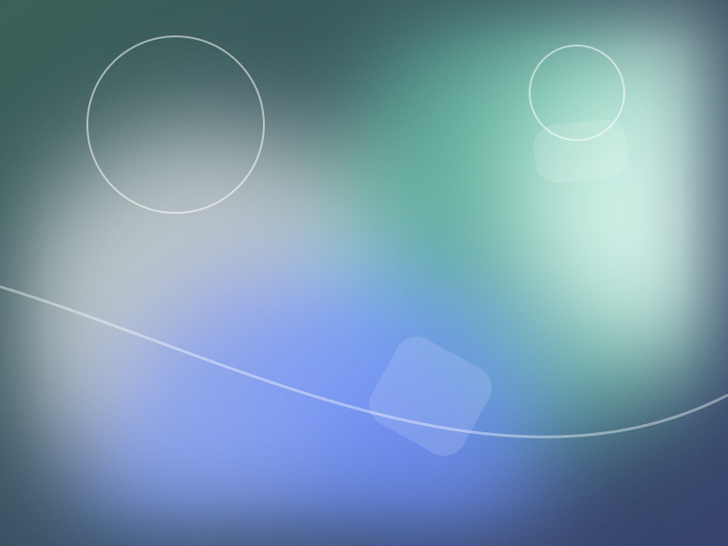
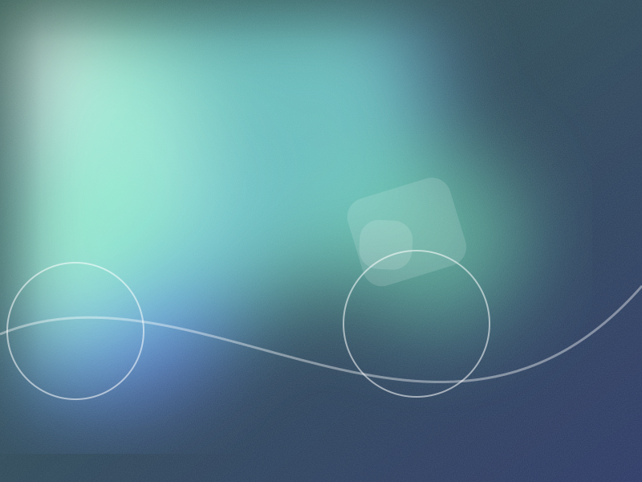
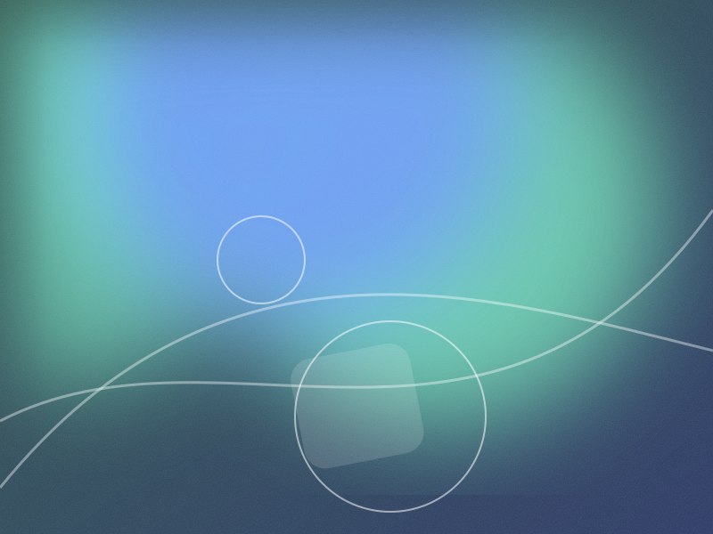
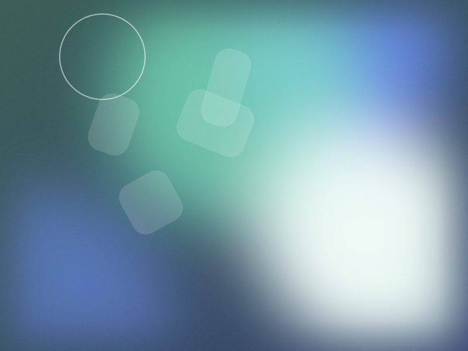
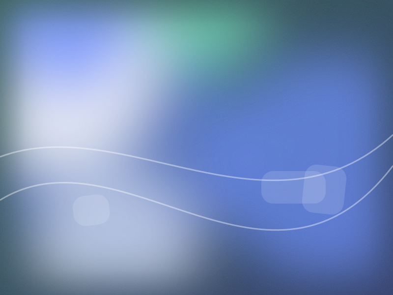
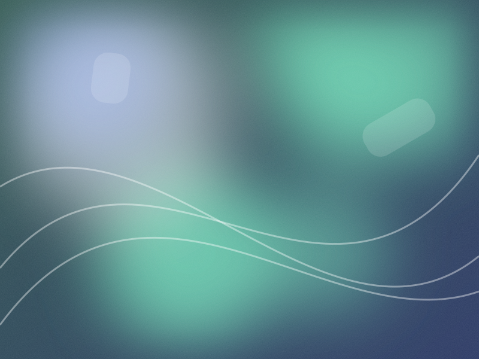
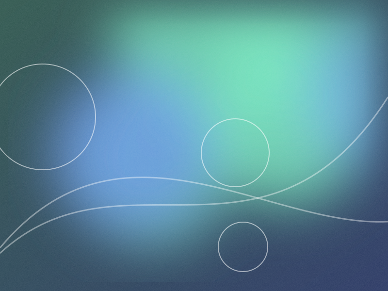
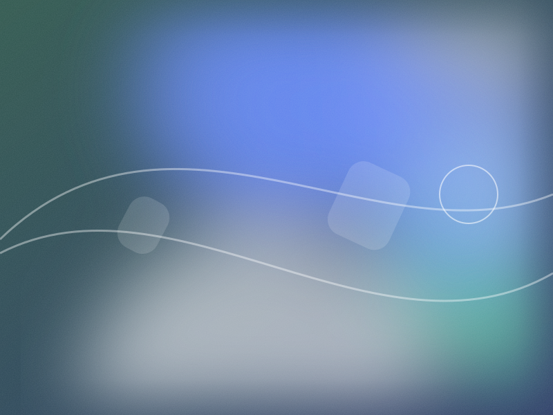
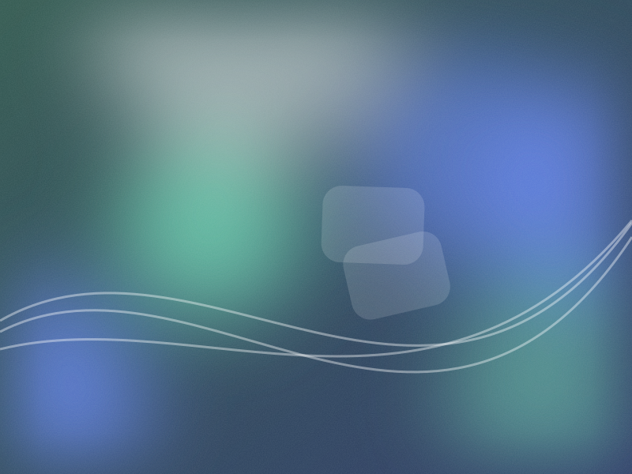

Shapes, color, and the objects that make a room feel like yours.
✳ NORTHSTAR
A tiny universe of ideasFind your
next thing.
Curiosity, with a compass. Search this little collection — nothing leaves your device.
Follow the little sparks.
Browse a few starting points, then search the local collection to find a thread worth pulling.
Bright questions about the world, answered one idea at a time.
Listen for the moments that make an ordinary day memorable.
Collect a new point of view without opening a thousand tabs.
Choose a direction.
MAKE SOMETHINGLEARN A FACTTAKE A BREATHGET CURIOUS
Clear results. Quiet interface.
Start with a word, a question, or a passing curiosity.
Filter a small set of hand-written concept cards instantly.
Follow a related idea when something catches your eye.
Made for wandering.
Every result is a fictional example in this offline prototype. There are no live search services or external requests.
Search works only across the ideas included on this page.
A responsive layout keeps the essentials close on mobile and desktop.
Before you head off.
No. It filters a small, local set of sample entries.
No search history or personal data is stored.
Yes. The sample list in this page's script is easy to extend.
Moodboard
A look inside Northstar.
Generated art, parallax depth and glass details.





Explore
Everything in its place.

Search
Discover search at Northstar.

Discover
Discover discover at Northstar.

Explore
Discover explore at Northstar.

Wonder
Discover wonder at Northstar.
Search
Discover search at Northstar.
Discover
Discover discover at Northstar.
By the numbers
Small details, big feeling.
0Ideas indexed
0Lightning find
0Private demo
0Topics
Kind words
What people might say.
Demo plans
Pick a pretend plan.
Log in with the demo login to choose one. Nothing is charged.
Free
$0
- Browse everything
- Save favorites
Plus
$9
- Everything in Free
- Early access
- Member badge
Studio
$19
- Everything in Plus
- Priority demo support
- Custom themes
Good to know
Quick answers.
Is search real?
It filters a small built-in demo list.
Does it track me?
No tracking exists in this demo.
Why dark mode?
The night sky makes results glow.
Ready?
Find your next thing.
No sign-up needed; this is a visual concept, and no contact details are collected.
Explore the concept